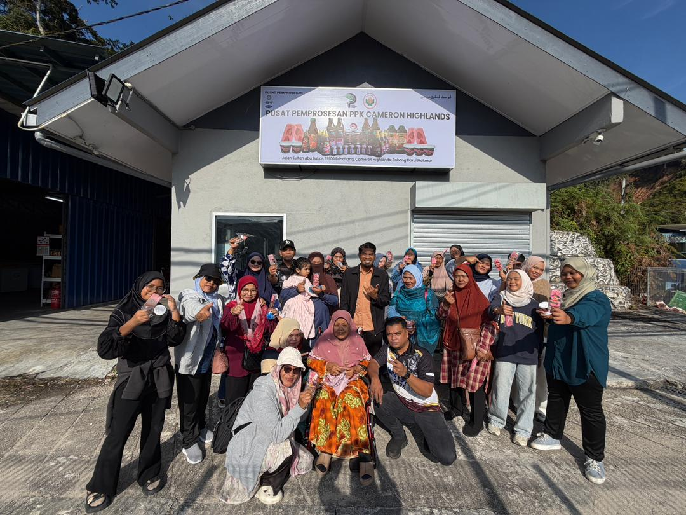
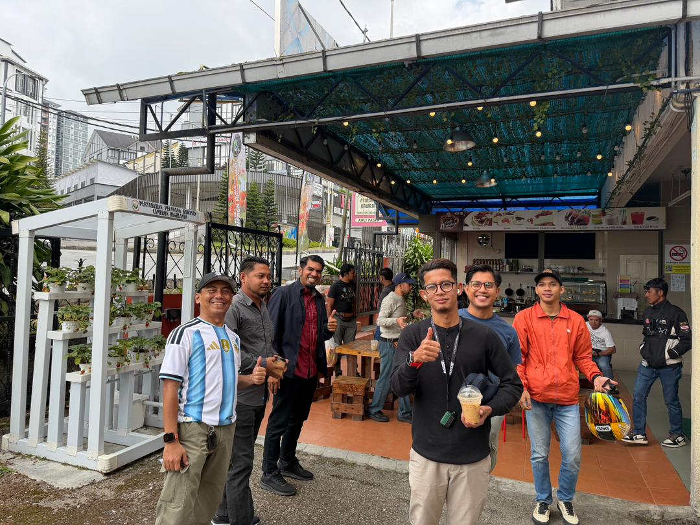

LAWATAN KERJA PENGARAH LPP NEGERI PAHANG KE PPK CAMERON HIGHLANDS.
PPK Cameron Highlands telah menerima lawatan kerja rasmi bagi meninjau perkembangan projek dan operasi semasa.
Para pegawai turut berkongsi pandangan dan cadangan penambahbaikan untuk memastikan projek terus maju dan mampan.
Lawatan ini memberi peluang kepada kakitangan PPK untuk menunjukkan pencapaian mereka dan memperkukuh jaringan dengan pihak negeri.
PPK Cameron Highlands received an official visit to review ongoing projects and operational developments.
Officers also shared insights and improvement suggestions to ensure projects remain progressive and sustainable.
The visit provided an opportunity for staff to highlight achievements and strengthen networks with state officials.
LAWATAN SAMBIL BELAJAR KE PUSAT PEMPROSESAN PERTUBUHAN PELADANG CAMERON HIGHLANDS
14 Januari 2026 | Brinchang, Tanah Rata

Seramai 42 anggota Unit Peladang Kampung Daching Hilir menyertai lawatan sambil belajar ke PPK Cameron Highlands.
Seramai 42 orang anggota Unit Peladang Kampung Daching Hilir, PPK Sri Klana Lenggeng, Negeri Sembilan telah menyertai Program Lawatan Sambil Belajar ke Pusat Pemprosesan PPK Cameron Highlands.
Sepanjang lawatan, peserta diberi pendedahan melalui demonstrasi pembuatan popsicle dan hard ice cream serta berpeluang merasai produk yang dihasilkan.
Peserta turut menerima penerangan dan galakan berkaitan pemasaran produk aiskrim, termasuk potensi untuk melaksanakan projek pembuatan aiskrim sendiri sebagai peluang menjana pendapatan.
Taklimat projek serta sesi perkongsian maklumat disampaikan oleh Pengurus Projek, Encik Rosmairy bin Mohd Noor, manakala Pengurus Besar PPK Cameron Highlands, Encik Mohamad Khairul Izwan bin Mohd Rasid turut hadir.
PPK Cameron Highlands merakamkan ucapan terima kasih atas kesudian memilih lokasi ini sebagai destinasi lawatan. Semoga program ini memberi manfaat dan menjadi pencetus kepada pembangunan projek usahawan peladang pada masa akan datang.
A total of 42 members of the Kampung Daching Hilir Farmers’ Unit, PPK Sri Klana Lenggeng, Negeri Sembilan, participated in the Educational Visit Program to the PPK Cameron Highlands Processing Center.
During the visit, participants were exposed to demonstrations on making popsicles and hard ice cream, and had the opportunity to taste the products.
Participants were also provided guidance and encouragement regarding ice cream product marketing, including the potential to undertake their own ice cream projects as income-generating opportunities.
Project briefings and information-sharing sessions were delivered by Project Manager, Mr. Rosmairy bin Mohd Noor, while the General Manager of PPK Cameron Highlands, Mr. Mohamad Khairul Izwan bin Mohd Rasid, also attended.
PPK Cameron Highlands expresses gratitude for choosing our center as the visit location. We hope this program is beneficial and inspires future development of farmer entrepreneurship projects.
LAWATAN PELADANG MUDA PPK TEMBELING
28 Januari 2026 | Brinchang, Cameron Highlands

Kumpulan Peladang Muda bergambar bersama pihak pengurusan.
PPK Cameron Highlands berbesar hati menerima lawatan daripada Kumpulan Peladang Muda PPK Tembeling.
Peserta turut melawat Peladang Outlet Kafe, mencuba hidangan tempatan, dan membeli produk sebagai cenderahati.
Lawatan ini menggalakkan semangat keusahawanan muda serta memberi inspirasi kepada generasi peladang muda.
PPK Cameron Highlands was honoured to welcome the Young Farmers Group of PPK Tembeling.
Participants also visited the Peladang Outlet Cafe, sampled local dishes, and purchased products as souvenirs.
This visit encourages young entrepreneurship and inspires the next generation of farmers.